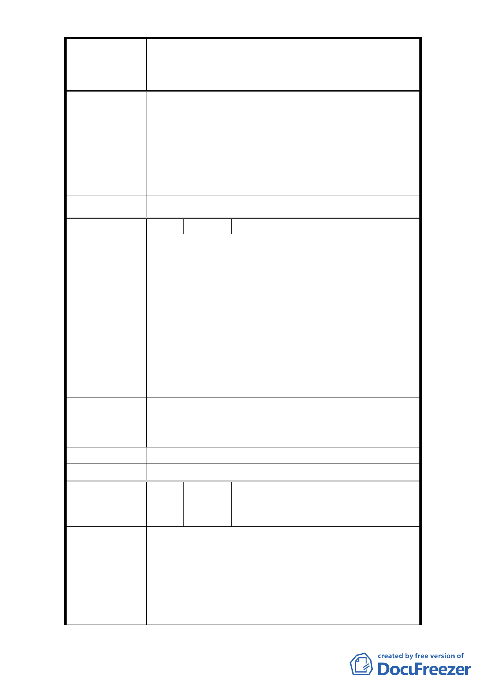

修訂臺北市大安區青田街保存區聚落風貌保存專用區細部計
案
名
畫、變更部分第三種住宅區、第三種商業區(特)為第三種住宅區
(特)(日式宿舍)及第三種商業區(特)(日式宿舍)暨劃定週邊地
區都市設計管制細部計畫案
建築亦是採納入都市計畫方式予以保存。
4. 新計畫並無修訂係考量建築基地毗鄰具保存價值
基地者，應維護整體保存場域所訂定之規範，並無
公、私有財分別。
5. 本府 96 年公告計畫案內並無補償之規定，另新計
畫修訂內容係依文化局研商會議結論摒除大範圍
「聚落風貌」保存概念，故尚無新增補償機制。
委 員 會 決 議 依市府回覆意見辦理。
編 號 21 陳情人 劉蓉英、陳茶妹
1. (1)本案不符合文化資產保存法保存維護規定範
圍，建議恢復原 74 年 3 月 25 日通過之都市計畫案。
(2)多數日式宿舍已殘破無人整理與文資法規定不
符。(3)原先通過聚落風貌保存專用區，以青田街為
名，擴大納入青田街以外巷弄，恐已不符都市計畫
陳 情 理 由 變更原則。
2. (1)現有既成之建築物與保存區之建築無關，不必列
入「計畫範圍」。(2)沿和平東路 1 段 183 巷之巷口
略為修改「直角」，修改並無困難，且不影響本案原
「計畫範圍」之完整性。
1. 恢復原 74 年 3 月 25 日通過之都市計畫案，與一般
建 議 辦 法 市民保有同樣房屋改建相同平等之權利。
2. 請修正「計畫範圍」如附圖三紅線所繪。
市 府 回 覆 意 見 同編號 1 回覆意見。
委 員 會 決 議 同編號 1 決議。
黃永達、游雲霞、張怡雯、林旻萱、
編 號 22 陳情人 蔡承恩、林福財、陳亦珍、張伊貝、
宋肅懿
1、青田街一帶坐落 4 棟古蹟、16 棟日式宿舍群、6 棟
歷史建物；聚落經過一百年累積，無法切割成單一
陳情理由
建築物保存。若開放區內一般民宅適用停獎措施並
解除限建，原有的聚落風貌將消失。
2、反對修改『青田街聚落風貌保存細部計畫』。
3、(1)請教立面統一用色不是能讓房價高嗎?何以要修
- 24 -